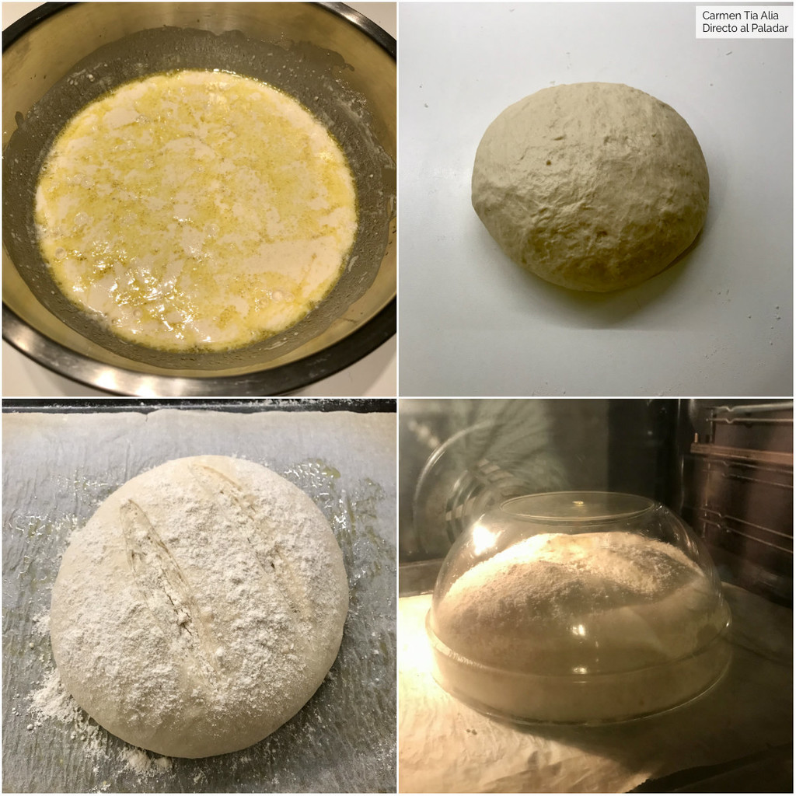

Elaboración
Introducimos el agua templada en un recipiente amplio y hondo y añadimos la levadura fresca, desmenuzada, y el azúcar. Removemos hasta que el azúcar y la levadura se integren por completo.
Añadimos la mitad de la harina y todo el aceite. Removemos bien, procurando aplastar los grumos que se formen, y dejamos reposar durante 20 minutos a temperatura ambiente, cubriendo el recipiente con un trapo limpio. La masa crecerá ligeramente y se llenará de burbujas.
Transcurrido el tiempo de reposo incorporamos el resto de la harina, la sal y removemos hasta que no podamos más, porque se volverá muy espesa. Espolvoreamos la superficie de trabajo con harina y volcamos la masa sobre ella. Nos engrasamos las manos con aceite y amasamos durante un par de minutos.
Formamos una bola con la masa y la colocamos sobre una bandeja de horno cubierta con papel vegetal untado con un poco de aceite. Hacemos dos cortes en la superficie con un cuchillo afilado y, si queremos dar un aire rústico al pan, lo espolvoreamos con harina.
Embadurnamos con aceite el interior de un recipiente amplio y hondo apto para horno (hemos usado un bol de pyrex de 24 cm, pero se puede usar una cacerola o similar) y cubrimos con él la masa. Cocemos en el horno, precalentado a 200 ºC con calor arriba y abajo, durante 45 minutos. Destapamos y dejamos enfriar sobre una rejilla antes de consumir.
Consultas